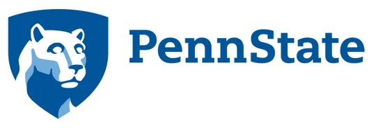
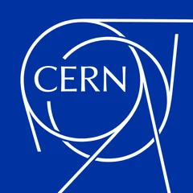
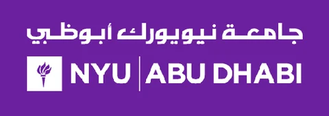

Computational biomedical research
Deep reinforcement learning, microfluidic device modeling, and simulation-driven research questions.
I'm a biomedical engineering Ph.D. candidate whose work brings together modeling, experimentation, and medical-device translation. My background spans engineering research, computational methods, and interdisciplinary collaboration.
Deep reinforcement learning, microfluidic device modeling, and simulation-driven research questions.
Preclinical planning and customer discovery for a bioresorbable hemostatic material.
Experience spanning biomedical microdevices, laboratory modeling, teaching, and robotics.

Active Biomaterials Laboratory · Penn StateComputational modeling and experimental research in intelligent microdevices and acoustofluidics.
Preclinical validation planning and customer discovery across clinical and prehospital care.
Supported numerical modeling and physiological systems coursework, including MATLAB- and COMSOL-based exercises.

CERN, GenevaRobotics analysis, mechanical modeling, and image-based infrastructure inspection studies.

Advanced Microfluidics and Microdevices Laboratory, NYU Abu DhabiMedical-device sensing and microfluidic bioassays.
Computation & AI · Python, MATLAB, deep reinforcement learning, computer vision, statistical analysis
Modeling & engineering · COMSOL, ANSYS, SOLIDWORKS, C++
Devices & experiments · microfabrication, photolithography, cleanroom workflows, embedded systems
Additional learning in machine learning, AI, healthcare systems, and clinical research.
These are completed, non-credit online courses offered through Coursera—not university degrees or academic credit.
Course authorized by DeepLearning.AI and Stanford University.
Course authorized by Google Cloud.
Course authorized by Stanford University.
Course authorized by DeepLearning.AI.
Course authorized by Johns Hopkins University.
Course authorized by University of Pennsylvania.